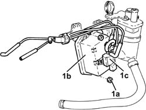

1060G70 vacum tank for controlling engine air intake r r
- Path
- Procedures > 10 ENGINE > 1060 DIESEL FUEL INJECTION > 1060G pressure pump electric control > 1060G70 vacum tank for controlling engine air intake r r
- Kind
- repair procedure (removal / refitting; the operation number is the code)
- Applies to
- engines: 1.9 JTD 16V; all production periods
- Interactive page
- https://sloeber94.github.io/elrnDB-a147/en/#/3025089
Applies to: engines: 1.9 JTD 16V; all production periods
 Removing
Removing
 Refitting
RefittingPosition the vehicle on the ramp.
Proceed with removal 7025A12 Engine front sound insulation COVER - R.R. .
Proceed with removal 7025A14 Bonnet LID - R.R. .
Proceed with removal 1016A10 sound-proofing cover - r + r .
Ensure that the ignition key is in the OFF position, then disconnect the negative battery terminal (-).
 | Name | Connector |
|---|---|---|
- | Battery |
Proceed with removal 7055B54 under-engine guard - r r .
Proceed with removal 1044B10 fuel filter assembly - r + r or replace .
Proceed with removal 1080D34 engine oil vapour separator - r + r .
1. At the bench, undo the nuts (1a) and remove the vacuum reservoir (1b) complete with solenoid valve (1c) and pipes from the mounting bracket.

Applies to: engines: 1.9 JTD 16V; all production periods
Refitting
RemovingPlace the vacuum reservoir mounting bracket complete with solenoid valve and pipes back in its housing and secure it using the nuts.
Proceed with refitting 1080D34 engine oil vapour separator - r + r .
Proceed with refitting 1044B10 fuel filter assembly - r + r or replace .
Proceed with refitting 7055B54 under-engine guard - r r .
Connect the negative (-) battery terminal.
Proceed with refitting 1016A10 sound-proofing cover - r + r .
Proceed with refitting 7025A14 Bonnet LID - R.R. .
Proceed with refitting 7025A12 Engine front sound insulation COVER - R.R. .
Remove the car from the ramps.